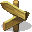

Humanos
Humanos são a raça mais comum por Siss, representam a maioria da população no continente,
eles podem variar de algumas regiões para outras. Assim também variando sua cultura e seus Deuses
Elfos
São de uma raça com mais afinidade a magia, as artes, poesia e canto.
são altos, esguis e muito agéis, habieis com as mãos. Tem caracteristica mais marcante na orelha, o que diferencia eles.
possui variações nas cores das peles e olhos dependendo da região.
Anões
Na verdade não são anões, são de estatura mediana ou baixa, são muito bons com trabalhos, e industrialização. São os melhores engenheiros de todo o continente
Povos Alienígenas
São povos de uma etinia diferente, provinda de uma outra dimensão, outro planeta
ou apenas experimentos dos Deuses e genética
Voltar 
Seriela e Milith© é marca registrada de Os Otames© Todos os direitos reservados.